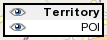

This is the online area editor.
There is no database support in the online area editor. However, you can import and export data using files.
 From the right side you can select which layer you are editing. You can edit only one layer at a time. By clicking the eye icon you can hide or show the layer on the map.
Clicking the map with shift key down you can add / remove POIs or boundaries of areas. Clicking the area you can activate it, and clicking an activated area you can edit its data. Clicking POIs you can edit their data.